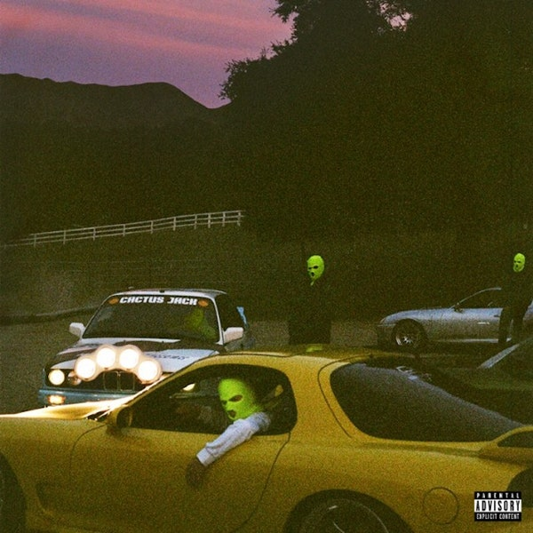
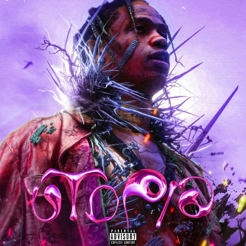

Days Before Rodeo

Released: August 18, 2014
Track List:
1. Days Before Rodeo The Prayer
2. Mamacita (Ft. Rich Homie Quan & Young Thug)
3. Quintana Pt.2
4. Drugs You Should Try It
5. Don't Play (Ft. Big Sean & The 1975)
6. Skyfall (Ft. Young Thug)
7. Zombies
8. Sloppy Toppy (Ft. Migos & Peewee Longway)
9. Basement Freestyle
10. Backyard
11. Grey
12. BACC (Bonus)
Rodeo

Released: September 4, 2015
Track List:
1. Pornography
2. On My Dis Side (ft. Quavo)
3. 3500 (Ft. Future & 2 Chainz)
4. Wasted (Ft. Juicy J)
5. 90210 (Ft. Kacy Hill)
6. Pray 4 Love (Ft. The Weeknd)
7. Nightcrawler (Ft. Swae Lee & Chief Keef)
8. Piss On Your Grave (Ft. Kanye West)
9. Antidote
10. Impossible
11. Maria I'm Drunk (Ft. Justin Bieber & Young Thug)
12. Flying High (Ft. Toro y Moi)
13. I Can Tell
14. Apple Pie
15. Ok Alright (Ft. ScHoolboy Q)
16. Never Catch Me
Birds In The Trap Sing McKnight

Released: September 16, 2016
Track List:
1. The Ends (Ft. André 3000)
2. Way Back
3. Coordinate (Ft. Blac Youngsta)
4. Through The Late Night (Ft. Kid Cudi)
5. Biebs In The Trap (Ft. Nav)
6. Sdp Interlude
7. Sweet Sweet
8. Outside (Ft. 21 Savage)
9. Goosebumps (Ft. Kendrick Lamar)
10. First Take (Ft. Bryson Tiller)
11. Pick Up The Phone by Young Thug & Travis Scott (Ft. Ouavo)
12. Lose
13. Guidance
14. Wonderful (Ft. The Weeknd)
Huncho Jack, Jack Huncho

Released: December 21, 2017
Track List:
1. Modern Slavery
2. Black & Chinese
3. Eye 2 Eye (Ft. Takeoff)
4. Motorcycle Patches
5. Huncho Jack
6. Saint
7. Go
8. Dubai Shit (Ft. Offset)
9. Saint Laurent Mask
10. Moon Rock
11. How U Feel
12. Where U From
13. Best Man
Astroworld

Released: August 3, 2018
Track List:
1. Stargazing
2. Carousel (Ft. Frank Ocean)
3. Sicko Mode (Ft. Drake)
4. R.I.P. Screw (Ft. Swae Lee)
5. Stop Trying To Be God (Ft. James Blake, Kid Cudi, Phillip Bailey & Stevie Wonder)
6. No Bystanders (Ft. JuiceWrld & Sheck Wes)
7. Skeletons (Ft. Pharrell Williams, Tame Impala & The Weeknd)
8. Wake Up (Ft. The Weeknd)
9. 5% Tint
10. NC-17 (Ft. 21 Savage)
11. Astrothunder
12. Yosemite
13. Can't Say (Ft. Don Toliver)
14. Who? What! (Ft. Quavo & Takeoff)
15. Butterfly Effect
16. Houstonfornication
17. Coffee Bean
Jackboys
Released: December 27, 2019
Track List:
1. Highest In The Room (Ft. Rosalía & Lil Baby
2. Jackboys
3. Gang Gang (Ft. Sheck Wes)
4. Had Enough (Ft. Quavo & Offset)
5. Out West (Ft. Young Thug)
6. What To Do? (Ft. Don Toliver)
7. Gatti (Ft. Pop Smoke)
Utopia
Release Date: 2021
Because Utopia has not released, this is consept art for the album cover.